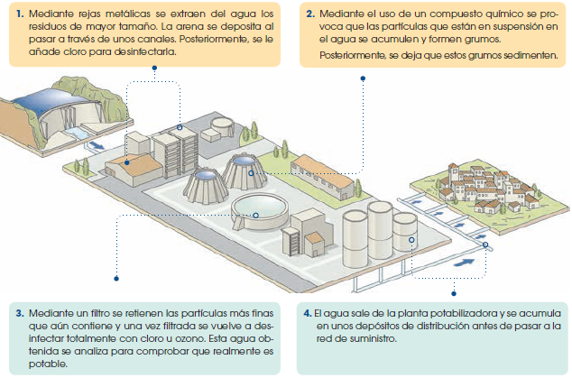
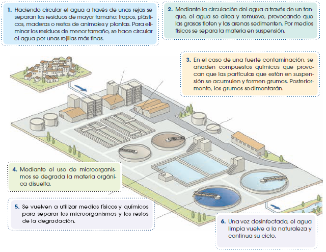
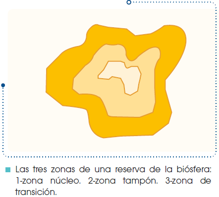

Recursos naturales y educación ambiental
Los recursos del planeta
El agua
Como ya sabes, el agua es un recurso fundamental para todos los seres vivos. El agua dulce que podemos utilizar los seres humanos es solo un 1% de las aguas continentales y se encuentra principalmente en lagos, ríos y aguas subterráneas.
Esta cantidad de agua es suficiente para satisfacer las necesidades de todos los habitantes del planeta, sin embargo, la distribución del agua no es homogénea ni proporcional a la densidad de población de las diferentes zonas de la Tierra. Es frecuente que zonas muy pobladas padezcan escasez de agua.
Esta distribución desigual del agua está relacionada con las diferencias en la cantidad de precipitaciones de las diversas zonas del planeta y con una gestión poco equitativa de este recurso.
Usos del agua
El agua es necesaria para el uso doméstico, así como para el desarrollo de las actividades económicas, como la agricultura, la ganadería y la industria.
• Uso doméstico: El agua la utilizamos para beber y cocinar, en la higiene personal, la limpieza del hogar, el riego de las plantas, etc.
• Uso agrícola y ganadero: En agricultura, el agua se utiliza para los regadíos y en la ganadería, para la bebida del ganado y para la limpieza de las naves donde se crían los animales.
• Uso industrial: El agua se utiliza en parte de los procesos de fabricación, como por ejemplo en el caso de la industria papelera y la industria de la alimentación, o bien, para la refrigeración de la maquinaria, lavado de materiales, etc. También se usa agua para obtener energía hidroeléctrica.
Para cada uno de estos usos, las cantidades aproximadas de agua utilizadas en los países desarrollados son las siguientes: el 5% es para uso doméstico; el 70% para uso agrícola, el 3% para el uso ganadero y el 22 % es para el uso industrial. En el consumo del agua se aprecian grandes contrastes entre los países desarrollados y los que están en vías de desarrollo.
Para mantener una buena calidad de vida se calcula que una persona necesita unos 80 litros de agua al día. En la actualidad el gasto diario de un ciudadano medio en un país desarrollado es aproximadamente de unos 200 a 300 litros por persona y día. En muchos países en vías de desarrollo las personas se ven obligadas a subsistir con menos de 25 litros de agua al día.
En los países desarrollados se suele utilizar agua potable para usos que no lo precisan, como la limpieza de calles o el riego de zonas verdes. Mientras, los países en vías de desarrollo más pobres no disponen de agua potable ni para beber, debido a la falta de infraestructuras para su potabilización y abastecimiento. A menudo se consume agua contaminada, es decir, agua de baja calidad que puede transmitir graves enfermedades.
Describir la importancia de los páramos en la provisión de agua a Ecuador
Así, para el consumo humano debe emplearse agua potable, es decir, el agua debe ser tratada mediante un proceso de potabilización que garantice que no contenga patógenos que transmitan enfermedades.
Este proceso, que veremos a continuación, se lleva a cabo en una planta potabilizadora, una instalación donde entra el agua procedente de un río, embalse y acuífero, y es sometida a un tratamiento fisicoquímico que permite su transformación en agua potable.
- Mediante rejas metálicas se extraen del agua los residuos de mayor tamaño. La arena se deposita al pasar a través de unos canales. Posteriormente, se le añade cloro para desinfectarla.
- Mediante el uso de un compuesto químico se provoca que las partículas que están en suspensión en el agua se acumulen y formen grumos. Posteriormente, se deja que estos grumos sedimenten.
- Mediante un filtro se retienen las partículas más finas que aún contiene y una vez filtrada se vuelve a desinfectar totalmente con cloro u ozono. Esta agua obtenida se analiza para comprobar que realmente es potable.
- El agua sale de la planta potabilizadora y se acumula en unos depósitos de distribución antes de pasar a la red de suministro.

Cualquier uso del agua modifica su calidad y su disponibilidad para otros usos, y por tanto se provocan una serie de impactos que veremos en el siguiente apartado.
Impactos del uso del agua
Los impactos relacionados con la explotación de los recursos hídricos son su contaminación y los provocados por las construcciones destinadas a su utilización, como por ejemplo, las presas y las canalizaciones.
• La contaminación del agua tiene diversos orígenes.
El consumo doméstico provoca la contaminación con materia orgánica que favorece la proliferación de patógenos como bacterias y virus; con detergentes, grasas y productos tóxicos, como la lejía.
El consumo agrícola y ganadero produce la contaminación por pesticidas y abonos, así como por las aguas residuales procedentes de las granjas.
El consumo industrial provoca la contaminación del agua por sustancias químicas muy diversas y materiales sólidos de difícil descomposición.
• Las presas y canalizaciones tienen, entre otras finalidades, la de garantizar las reservas de agua para su distribución, así como evitar daños durante la crecida de los ríos. Sin embargo, provocan la inundación de grandes superficies de terreno y la variación de la dinámica fluvial. Como consecuencia, se alteran los ecosistemas de las zonas cercanas por las variaciones del caudal, así como:
Medidas preventivas y correctoras
Para seguir disponiendo a largo plazo de agua para llevar a cabo las diversas actividades humanas, es necesario evitar o disminuir los impactos sobre su disponibilidad y su calidad. Es preciso aplicar diversas medidas correctoras para ahorrar agua y para evitar su contaminación.
Medidas para ahorrar agua
• Racionalizar el consumo en el ámbito doméstico: cerrar el grifo mientras te cepillas los dientes; arreglar grifos que gotean o cisternas que no cierran bien; ducharse en vez de bañarse; poner un dosificador o una botella en la cisterna del inodoro.
• Utilizar sistemas de riego que aprovechen el agua de un modo más eficaz, como el riego por aspersión o el riego por goteo.
• Racionalizar el consumo en el ámbito industrial, como en el caso de las centrales hidroeléctricas en las que el agua puede volver a ser utilizada diversas veces.
• Mejorar la impermeabilización de las redes de distribución, ya que en ellas se producen abundantes pérdidas.
Medidas para evitar o disminuir la contaminación
• En el ámbito doméstico evitar arrojar al agua grasas, compuestos no biodegradables o sustancias tóxicas.
• Utilizar fertilizantes orgánicos, como el estiércol, en vez de fertilizantes químicos, ya que estos pueden acabar contaminando ríos y acuíferos.
• Dotar a las industrias con sus propias plantas depuradoras o responsabilizarse de gestionar la limpieza de las aguas residuales que generan.
• Tratar siempre las aguas residuales procedentes de cualquier uso, mediante un proceso de depuración, antes de ser devueltas a la naturaleza, para evitar que contengan contaminantes.
La eutrofización del agua
La eutrofización es un proceso de disminución de la calidad del agua debido a un aporte excesivo de fosfatos y nitratos procedentes de la contaminación por materia orgánica o por detergentes.
Como consecuencia, proliferan organismos vegetales que se alimentan de fosfatos y nitratos. Esta proliferación causa la pérdida de transparencia de las aguas, la disminución del oxígeno y, por tanto, la desaparición de otros organismos.

- Haciendo circular el agua a través de unas rejas se separan los residuos de mayor tamaño: trapos, plásticos, maderas o restos de animales y plantas. Para eliminar los residuos de menor tamaño, se hace circular el agua por unas rejillas más finas.
- Mediante la circulación del agua a través de un tanque, el agua se airea y remueve, provocando que las grasas floten y las arenas sedimenten. Por medios físicos se separa la materia en suspensión.
- En el caso de una fuerte contaminación, se añaden compuestos químicos que provocan que las partículas que están en suspensión se acumulen y formen grumos. Posteriormente, los grumos sedimentarán.
- Mediante el uso de microorganismos se degrada la materia orgánica disuelta.
- Se vuelven a utilizar medios físicos y químicos para separar los microorganismos y los restos de la degradación.
- Una vez desinfectada, el agua limpia vuelve a la naturaleza y continua su ciclo.
Durante el proceso de depuración se obtienen fangos o lodos que se procesan en plantas de tratamiento de lodos. Después de ser tratados, se pueden utilizar como fertilizantes agrícolas o de jardinería, y el resto se lleva a un vertedero.
Simulación de la depuración del agua
Vamos a realizar un montaje muy sencillo para simular la depuración del agua. Para ello necesitas: agua del grifo, arena, hojas secas y un huevo batido; tres garrafas cortadas a media altura; 1 colador y alum (sulfato de aluminio y potasio hidratado).
• En la garrafa 1 pon 1 l de agua del grifo, la arena, las hojas secas y el huevo batido.
• Recoge con el colador las hojas secas.
• Remueve la mezcla y déjala reposar para que la arena sedimente. Decanta la mezcla en la garrafa 2 procurando que no caiga la arena.
• Añade alum en la garrafa 2 y mézclalo. Déjalo reposar para que se formen grumos y sedimenten.
• Decanta el agua en la garrafa 3, procurando no verter los grumos.
En este proceso, el colador equivale a las rejas del proceso de depuración descrito; cuando removemos la mezcla equivale a la circulación del agua a través de un tanque. El alum es uno de los compuestos químicos que se utilizan en las estaciones depuradoras para que se formen grumos, sedimenten y así puedan eliminarse fácilmente.
En esta simulación no se incluye la eliminación de la materia orgánica mediante el uso de microorganismos.
Los minerales y las rocas
El ser humano explota la riqueza de la corteza terrestre desde hace miles de años. Sin embargo, en los últimos 200 años se han incrementado muchísimo la variedad y la cantidad de minerales y rocas que utilizamos, así como el ritmo de explotación.
Estos recursos no se distribuyen uniformemente por el planeta, las concentraciones de determinados minerales y rocas dependen de los procesos geológicos externos e internos que han tenido lugar en cada zona.
Usos de los minerales y las rocas
Según su utilidad, hablamos de minerales y rocas energéticos o de minerales y rocas no energéticos.
Minerales y rocas energéticos
Son los que se utilizan para obtener energía a partir de su combustión o la de sus derivados.
El carbón y el petróleo son combustibles fósiles, es decir, se originaron a partir de la descomposición de microorganismos, plantas o animales que quedaron enterrados hace millones de años. La combustión de ambos proporciona un elevado poder calorífico.
Los minerales de uranio contienen elementos químicos que se utilizan para obtener energía nuclear a partir de reacciones de fisión.
Minerales y rocas no energéticos
Se utilizan para la fabricación de objetos y útiles diversos o como materiales de construcción.
El aluminio y el hierro son minerales metálicos que se utilizan en las industrias metalúrgicas como materia prima para la fabricación de numerosos objetos.
El yeso es un mineral utilizado en la industria de la construcción como revestimiento, el Minerales y rocas energéticos Minerales y rocas no energéticos mármol y el granito son rocas que también se utilizan en la construcción, ya sea de edificios o como pavimentos de las vías de comunicación.
Impactos del uso de minerales y rocas
Los principales impactos derivados del consumo y extracción de minerales y rocas son la contaminación atmosférica, la destrucción del suelo y la contaminación del agua de los océanos.
• La contaminación atmosférica está provocada principalmente por la emisión de gases procedentes de la combustión de los minerales y rocas energéticos.
Como consecuencia de esta emisión de gases se producen otros impactos muy graves: la lluvia ácida, la destrucción de la capa de ozono y la intensificación del efecto invernadero.
La lluvia ácida
La lluvia ácida son precipitaciones que arrastran compuestos altamente tóxicos que se encuentran en la atmósfera, como el ácido sulfúrico y el ácido nítrico. Estos compuestos son el resultado de la combinación del vapor de agua y del oxígeno de la atmósfera con óxidos de azufre y de nitrógeno procedentes de la combustión del carbón y del petróleo.
En la actualidad la lluvia ácida está causando la degradación de numerosos ecosistemas acuáticos y terrestres.
La destrucción de la capa de ozono
La destrucción de la capa de ozono de la atmósfera se debe a la combinación del ozono con los clorofluorocarburos (CFC), unos gases procedentes de diversos procesos industriales y domésticos.
Como ya sabes, el ozono actúa como filtro de las radiaciones ultravioleta. Su destrucción, por tanto, permite que esta radiación atraviese libremente la atmósfera y que pueda afectar gravemente a los seres vivos, ya que produce alteraciones del ADN celular.
La intensificación del efecto invernadero
La intensificación del efecto invernadero natural consiste en un aumento de la capacidad de retención de calor de la atmósfera. Esto se debe al incremento de la concentración de vapor de agua y dióxido de carbono, gases procedentes de diversas actividades humanas.
Estos gases impiden que la radiación infrarroja escape al espacio y causan un recalentamiento del planeta. Por tanto, el aumento de su concentración contribuye al cambio climático.
• La destrucción del suelo se debe a las excavaciones que se realizan en las explotaciones mineras. Como consecuencia de la pérdida de suelo, se modifica el biotopo y, con él, las especies de plantas y animales que viven en la zona de explotación. La pérdida de vegetación favorece los procesos erosivos.
• La contaminación del agua se produce por las operaciones de lavado de los minerales. Estos procesos alteran la calidad de las aguas superficiales y la de los acuíferos, debido a las filtraciones por la lluvia.
Medidas preventivas y correctoras
• Favorecer métodos de explotación menos agresivos con el entorno y regenerar el suelo y la vegetación de la zona de explotación, una vez las minas o canteras han dejado de ser productivas.
• Utilizar sistemas de reducción de la emisión de gases contaminantes en las infraestructuras y en la maquinaria. Por ejemplo, utilizando filtros, modificando el funcionamiento de motores, etc.
• Fomentar el ahorro del consumo de estos recursos entre la población y promover el reciclaje de los productos derivados de estos recursos.
• Investigar acerca de nuevos materiales que pueden sustituir algunos minerales o rocas.
• Incrementar la utilización de fuentes de energía renovables y fomentar su investigación y desarrollo.
El suelo y los seres vivos
El suelo es el sustrato en el que se desarrolla gran parte de los seres vivos. Contiene agua y nutrientes que posibilitan el crecimiento de las plantas y hace posible el desarrollo de los ecosistemas. A su vez, en el proceso de formación del suelo intervienen los seres vivos.
En nuestro planeta, existen distintos tipos de suelo según el clima de la zona, las rocas a partir de las cuales se ha originado y los seres vivos que habitan en él.
Respecto a los seres vivos, existe una gran diversidad de especies. Hasta la actualidad se han descrito aproximadamente 1,8 millones de especies y su distribución en el planeta es heterogénea. Las zonas con una mayor biodiversidad son las selvas tropicales y los arrecifes de coral.
Usos del suelo y de los seres vivos
El suelo y los seres vivos se explotan a partir de actividades como la agricultura, la ganadería y la pesca para la obtención de alimentos, principalmente, y para la obtención de otros tipos de productos.
• Agricultura, ganadería y pesca: Como ya sabes, estas actividades en los países desarrollados se llevan a cabo de forma intensiva y para ello requieren grandes extensiones de terreno, la utilización de pesticidas y fertilizantes, la utilización de piensos como alimento para los animales, etc. Parte de la ganadería se alimenta con pastos, que en muchos casos proceden de bosques talados.
• Otros usos de los seres vivos: Los bosques nos proporcionan madera, resina, caucho, etc. y algunas sustancias procedentes de animales y plantas se utilizan para la obtención de medicamentos.
Impactos del uso del suelo y los seres vivos
Los principales impactos derivados de los usos del suelo y los seres vivos son los siguientes: contaminación del suelo, erosión, desertización, y pérdida de la biodiversidad.
• La contaminación del suelo se origina por el abuso de fertilizantes, abonos, pesticidas, etc. en la agricultura. También por el vertido de diversos residuos como los lodos de las depuradoras, el aporte por precipitación y deposición de contaminantes atmosféricos, el riego con aguas contaminadas, etc.
• La erosión del suelo es la pérdida gradual del material que lo constituye, y se agrava si el suelo no presenta vegetación que lo proteja. En ese caso, el agua y el viento arrastran fácilmente la materia orgánica de la capa más superficial, así como la materia inorgánica. Como consecuencia la productividad del suelo disminuye y puede llegar a perder la capacidad de sustentar la vida de los vegetales.
Muchas técnicas utilizadas por la agricultura, la ganadería o la explotación forestal destruyen la vegetación y dejan el suelo más vulnerable.
Cuando la erosión del suelo es tan grave que supone la conversión en desierto de una zona, hablamos de desertización y desertificación.
• La desertización es la pérdida de suelo por causas naturales, principalmente por las escasas precipitaciones en las zonas áridas y semiáridas del planeta. En este caso los procesos de erosión del suelo superan a los de formación. Este grave problema amenaza aproximadamente a una tercera parte de la superficie terrestre.
La desertificación es la desertización inducida por el ser humano. Algunas de las actividades que favorecen este proceso son, por ejemplo, la eliminación de la cubierta vegetal con el fin de utilizar el suelo para construcciones diversas, para pastoreo, etc.
La producción de alimentos
Los pesticidas, los fertilizantes, las hormonas, etc, son aplicados de forma intensiva. Estos se añaden para incrementar la producción, sin embargo puede producir diversos trastornos.
Por este motivo, se utilizan cada vez más los métodos de control biológico. Este consiste en el uso de determinados organismos que controlen las poblaciones de aquellas especies que se han convertido en una plaga. Así estos insectos de numerosos cultivos se pueden controlar mediante la introducción en el medio de sus depredadores naturales.
• La pérdida de la biodiversidad es un impacto causado principalmente por la destrucción de los ecosistemas.
Esta destrucción se debe a varios factores, como la deforestación, que, implica la pérdida de las especies propias del bosque; la contaminación del agua, del aire o del suelo; y el comercio ilegal de animales vivos y plantas silvestres.
El comercio ilegal no tan solo implica la pérdida de biodiversidad, sino que además, supone un expolio para los países de origen de las especies animales y vegetales, porque se trata generalmente, de países pobres en los que la población realiza este tipo de comercio para subsistir.
El peligro de extinción de especies, tanto animales como vegetales, es uno de los problemas más graves que afectan al medio natural. Se considera que una especie está en peligro de extinción cuando quedan tan pocos individuos que es fácil que desaparezcan en un corto período de tiempo.
Medidas preventivas y correctoras
Para reducir o eliminar los impactos, se tienen que plantear una serie de medidas sobre las técnicas agrícolas, ganaderas y de pesca, así como sobre la gestión del suelo y la protección de las especies en peligro de extinción.
• Estimular el policultivo, es decir, cultivar en una misma parcela diversas variedades de plantas que se siembran y recolectan en diferentes épocas del año, de manera que el suelo no queda nunca desprotegido.
• Repoblar el suelo con especies vegetales propias de la zona, de modo que no modifiquen y alteren las características propias del medio.
• Garantizar la conservación de los bosques y mantener la biodiversidad, para ello deben tomarse, entre otras medidas, las que eviten los incendios forestales.
• Practicar un pastoreo rotativo, es decir, disponer de diversos terrenos de pasto y utilizarlos alternativamente para no agotar este tipo de suelo, así como promover el uso de especies de ganado propias de la zona.
• Delimitar las zonas de explotación pesquera, teniendo en cuenta la necesidad de que las capturas no dañen la vida marina.
• Regular el comercio de las especies amenazadas y proteger las especies en peligro de extinción.
• Preservar los ecosistemas mediante la creación de espacios naturales protegidos.
La sostenibilidad o desarrollo sostenible
¿Qué es la sostenibilidad o desarrollo sostenible?
Desde hace unos años se alerta de la necesidad de un cambio en las relaciones e interacciones entre el ser humano y el medioambiente. El nuevo planteamiento propuesto se basa en la sostenibilidad.
La sostenibilidad, o desarrollo sostenible, se interpreta como la necesidad de continuar explotando los recursos naturales, pero de manera que los impactos negativos se reduzcan y no se ponga en peligro el futuro de toda la biósfera.
Esta necesidad de cambio surge tras analizar diversos aspectos que se consideran consecuencia de nuestro actual modelo de desarrollo. Algunos de estos aspectos son los siguientes:
• El clima del planeta está alterándose por un incremento global de la temperatura.
• La biodiversidad está gravemente amenazada por la desaparición de ecosistemas y de especies.
• El ritmo de explotación de los recursos naturales está poniendo en peligro su utilización en un futuro próximo.
• La contaminación afecta a la salud de las personas. En la actualidad, sabemos que ciertos contaminantes están relacionados con el desarrollo de diversas enfermedades como las alergias, diferentes tipos de cáncer, trastornos del sistema nervioso, enfermedades del sistema respiratorio, etc.
Todos estos aspectos ponen en peligro la continuidad de nuestro sistema económico y de nuestra sociedad, ya que influyen en el futuro de la producción de alimentos, en la disponibilidad de los recursos naturales y también en nuestra propia salud.
Para corregir estos problemas es necesario implantar un nuevo modelo de desarrollo que pueda garantizar las necesidades de los seres humanos ahora y en el futuro. Este nuevo modelo de desarrollo debe tener entre sus objetivos el reparto equitativo de la riqueza para la reducción de la pobreza.
La pobreza es un gran problema estrechamente relacionado con el medioambiente, porque en muchos casos los países en vías de desarrollo deben explotar sin control sus recursos naturales para venderlos a los países desarrollados.
Se calcula que el 20 % de la humanidad dispone del 80 % de la riqueza del planeta, mientras que el 80 % de los seres humanos restante debe sobrevivir con el 20% de la riqueza.
Para paliar este problema es muy importante el establecimiento de relaciones comerciales directas con los productores de los países en vías de desarrollo, eliminando los intermediarios y originando el denominado comercio justo.
El comercio justo incentiva el desarrollo autónomo y permite salir de la pobreza a millones de personas de los países en vías de desarrollo.
Además de estos cambios que afectan al modelo de desarrollo de nuestra sociedad también es necesario aplicar una serie de medidas para paliar el deterioro ambiental del planeta. Algunas de las medidas más destacables son la gestión de los residuos y la creación de espacios naturales protegidos, que estudiaremos a continuación.
Gestión de los residuos
Los residuos constituyen un grave problema debido a la gran cantidad que se genera, a que se eliminan con gran dificultad y a que muchos de ellos no se descomponen de forma natural, de manera que se acumulan y contaminan el agua, el suelo, etc.
Por este motivo, en la actualidad se intentan separar los residuos en origen para reducir al máximo el volumen de residuos no aprovechables, es decir, se lleva a cabo una recogida selectiva. La recogida selectiva consiste en agrupar separadamente los diferentes tipos de residuos según el tratamiento que se aplique posteriormente.
Los tratamientos que pueden aplicarse son: la recuperación, la reutilización, el reciclaje y la regeneración.
Recuperación. Consiste en aprovechar las sustancias o los posibles recursos energéticos de los residuos. Por ejemplo, la combustión de residuos en las plantas incineradoras puede generar energía eléctrica.
Reciclaje. Consiste en aprovechar el residuo para la fabricación de nuevos productos, iguales o diferentes a los iniciales. Por ejemplo, el vidrio se recicla para obtener de nuevo vidrio.
Regeneración. Consiste en tratar los residuos para que recuperen sus cualidades iniciales. Por ejemplo, los aceites minerales que usan los automóviles son tratados para volver a utilizarse.
Reutilización. Consiste en utilizar de nuevo un residuo, ya sea para el mismo uso o para uno distinto. Por ejemplo, algunas botellas pueden ser reutilizadas varias veces.
Estos tratamientos se aplican normalmente a la materia inorgánica. A la materia orgánica se le puede aplicar otro tratamiento denominado compostaje, que transforma la materia orgánica en abono para las plantas.
A nivel doméstico, una buena manera de gestionar nuestros propios residuos es aplicar la estrategia de las R: reducir la producción de residuos, reutilizar los productos tantas veces como sea posible y reciclar los productos para un nuevo uso. La reducción, la reutilización y el reciclaje son necesarios para reducir el consumo y los gastos de materias primas y de energía que comportan los procesos productivos, así como el peligro de agotamiento de los recursos naturales.
Ecogestión
¿Qué es la ecogestión?
Entendemos por gestión ambiental o ecogestión el conjunto de medidas y acciones racionales que engloban la organización, la responsabilidad, las prácticas, los procedimientos, los procesos y los recursos orientados a la aplicación de una política ambiental, ya sea del sector privado o de la Administración pública.
Los objetivos de la gestión ambiental comprenden procesos de defensa, protección y mejora del medioambiente. Estos objetivos son:
• Defender los sistemas ambientales evitando su degradación.
• Proteger y conservar los recursos naturales mediante su uso racional y sostenible.
• Mejorar o conservar la calidad de vida de manera que sea compatible con el respeto al medio ambiente. Para que esta gestión sea efectiva:
La población debe estar concienciada respecto a la problemática ambiental y actuar en consecuencia y de manera coherente.
• La gestión ambiental debe estar respaldada por estudios científicos que la avalen y delimiten su ámbito de aplicación.
• Deben plantearse soluciones alternativas y técnicamente viables a proyectos o planes responsables de futuros impactos ambientales.
• La Administración debe suministrar los medios e instrumentos necesarios: instrumentos legislativos, económicos, etc. para alcanzar los objetivos planteados en la gestión ambiental.
En unidades anteriores hemos estudiado el tipo de gestión que se realiza sobre cada uno de ellos: gestión del agua, gestión del bosque, gestión de los recursos energéticos, gestión de los residuos, etc. La gestión ambiental integra todos estos aspectos relacionados con el uso, la conservación y la planificación de los recursos naturales.
Para poder aplicar las acciones y medidas de que dispone la gestión ambiental hacen falta instrumentos o herramientas que permitan abordar la problemática ambiental.
Estos instrumentos de ecogestión se clasifican en medidas preventivas y medidas correctoras, según si la actuación se lleva a cabo antes o después de la acción o el proyecto susceptible de dañar el medioambiente.
En los siguientes apartados estudiaremos en qué consiste cada una de estas medidas.
Medidas preventivas para el cambio medioambiental
Las medidas preventivas son aquellas que se desarrollan antes de la consecución de un determinado proyecto para evitar o reducir los daños que este pueda producir sobre el medioambiente.
Se consideran medidas preventivas: la educación ambiental, la evaluación del impacto ambiental, la investigación básica, la planificación del territorio y la protección de espacios de determinado interés.
Educación ambiental
Es un proceso orientado a desarrollar la concienciación y el interés frente a las cuestiones ambientales y su problemática global.
La educación ambiental ha de integrar conocimientos, actitudes, técnicas, etc. para trabajar individual y colectivamente la solución a los problemas actuales y la prevención de los que puedan llegar.
La finalidad de la educación ambiental es conseguir que las personas desarrollen conductas correctas hacia su entorno de acuerdo con valores asumidos libre y responsablemente.
El éxito de la gestión ambiental depende en gran medida del apoyo popular a las cuestiones ambientales. El apoyo activo de la población impulsa la acción tanto de las autoridades locales como de las regionales o estatales.
La educación ambiental debe impartirse a personas de todas las edades, a todos los niveles, tanto desde las escuelas y las aulas de naturaleza, como por parte de los gobiernos de las naciones, las organizaciones no gubernamentales, etc.
Según el informe de la Conferencia de Tbilisi (Unesco1980), los objetivos principales de la educación ambiental son:
- Que el ser humano comprenda la naturaleza compleja del medioambiente resultante de la interacción de sus aspectos biológicos, físicos, sociales y culturales.
- Promover una utilización reflexiva y prudente de los recursos del universo para la satisfacción de las necesidades humanas.
- Contribuir a que se perciba claramente la importancia del medioambiente en las actividades de desarrollo económico, social y cultural.
- Favorecer en todos los niveles una participación responsable y eficaz de la población en la concepción y aplicación de las decisiones que ponen en juego la calidad del medio natural, social y cultural.
- Difundir informaciones acerca de las modalidades de desarrollo que no repercutan negativamente en el medioambiente.
- Mostrar con toda claridad las interdependencias económicas, políticas y ecológicas del mundo moderno por lo que respecta a las decisiones y los comportamientos de todos los países y regiones.
- Desarrollar un sentido de la responsabilidad y la solidaridad entre los países y las regiones, cualquiera que sea su grado de desarrollo, como fundamento de un orden institucional que garantice la conservación y mejora del medio humano.
- Facilitar al individuo y a las colectividades los medios de interpretar la interdependencia de los diversos elementos económicos, sociales, culturales, biológicos y físicos en el espacio y el tiempo.
Investigación científica y desarrollo tecnológico
En el ámbito de la política ambiental de la Unión Europea se han desarrollado unos Programas Marco de I + D (investigación y desarrollo) encaminados a lograr un desarrollo equilibrado con la conservación de la naturaleza y la calidad de vida. Estos programas sostienen que es necesario avanzar en la búsqueda de nuevas tecnologías que no provoquen agresión y respeten el medioambiente.
El Programa Marco incentiva y apoya a empresas e instituciones para que lleven a cabo proyectos de investigación y desarrollo.
En materia de medioambiente, los objetivos científicos y técnicos son:
• Comprender los procesos de cambio global y su interacción con la dinámica de los ecosistemas: en esta línea se concretan estudios como los que se realizan sobre el cambio climático, depuración de efluentes…
• Fomentar la innovación tecnológica, priorizando las observaciones vía satélite, para la protección del medioambiente: desarrollo de tecnologías limpias y sistemas de protección y rehabilitación del medio.
• Integrar la economía en el estudio de las problemáticas ambientales.
Ordenación del territorio
En nuestro país, y en el resto del mundo industrializado, se han producido desórdenes territoriales debidos a una actividad económica que no ha valorado los aspectos sociales, ecológicos y culturales. Las áreas montañosas con fuerte regresión demográfica y escasa inversión pública o la explotación inadecuada de los recursos naturales son ejemplos de desequilibrios en la gestión del territorio.
La ordenación del territorio tiene como objetivo conocer las características del medio, hacer una valoración de los recursos naturales y ordenar los posibles usos. Se apoya en dos conceptos clave:
• La aptitud del territorio: valoración de la capacidad de acogida que posee el territorio para las diversas actividades a que puede ser destinado. Para ello se elabora una matriz de acogida, donde se contrastan los elementos del territorio con sus posibles actividades.
• La evaluación del impacto ambiental (EIA): estudios que permiten estimar qué efectos provoca sobre el medioambiente la ejecución de un determinado proyecto.
El proceso de ordenación territorial se puede dividir en cuatro fases:
1. Definición de objetivos según las necesidades de la población, de la aptitud del terreno y sus recursos.
2. Inventario de los elementos del territorio relacionados con sus objetivos.
3. Valoración de los elementos del territorio por medio de programas de sistemas de información geográfica (SIG) que permiten superponer mapas temáticos, facilitando el uso de la información gráfica.
4. Determinación del futuro uso del suelo. Los usos que comporten aptitudes altas e impactos bajos serán los que se apliquen preferentemente.
Espacios protegidos
Corresponden a unidades del territorio que por sus peculiaridades geológicas, biológicas o paisajísticas tienen una protección especial.
Según sea este grado de protección, se articulan diferentes figuras, por ejemplo, parques nacionales, parques naturales, etc. A continuación, analizaremos las reservas de la biósfera, que nacen de la necesidad de compatibilizar la preservación de los recursos naturales con su uso sostenible.
Las reservas de la biósfera son zonas de ecosistemas terrestres o costeros-marinos, o una combinación de estos, reconocidas en el plano internacional como tales en el marco del Programa sobre el Hombre y la Biósfera (MAB) de la Unesco (Marco Estatutario de la Red Mundial de Reservas de la Biósfera).
Estas zonas, las Reservas de la Biósfera, son lugares en los que se aplica el objetivo principal del programa MAB: obtener un equilibrio que integre las necesidades humanas, la conservación de la diversidad biológica, el impulso y desarrollo económico de la zona y la conservación del patrimonio y los valores culturales de dicho lugar.

Este programa fue iniciado en 1971 por la Unesco y, a partir de 1974, dentro del mismo Programa, comenzó la creación de las reservas de la biósfera.
Las reservas de la biósfera son propuestas por los mismos gobiernos y, generalmente, se encuentran en espacios naturales ya protegidos. Sin embargo, deben cumplir ciertas funciones:
• Función de conservación: garantizar la protección y la conservación de los recursos naturales. Deben ser lugares representativos de los ecosistemas naturales de la zona. • Función de desarrollo: realizar proyectos de investigación que permitan promover el desarrollo económico y social.
• Función de apoyo logístico: desarrollar actividades de educación ambiental, formación e investigación, dirigidas a los habitantes de la reserva y a sus visitantes, que permitan, a su vez, el intercambio de experiencias en el ámbito internacional.
Las reservas de la biósfera se estructuran de distinta manera atendiendo a las necesidades locales de cada una. Todas ellas deben contener uno o varios de estos tres elementos:
• Zona núcleo (1): Zona prioritaria de conservación y protección a largo plazo. Permanece prácticamente inalterada conforme a los objetivos de conservación de la reserva.
• Zona tampón (2): Zona circundante o limítrofe con las zonas núcleo. Alberga actividades compatibles con la protección y la conservación del medio.
• Zona de transición (3): En ella se dan diversas actividades y una mayor explotación de los recursos naturales, pero siempre dentro de los límites que permiten el desarrollo sostenible de la zona.
Reservas protegidas del Ecuador
Las áreas protegidas son zonas geográficas dentro de un país donde existe un manejo gestionado acerca de los recursos que provee. El objetivo de estas áreas en Ecuador es conseguir una conservación correctamente gestionada a largo plazo de la naturaleza, de los servicios naturales y ecosistémicos que nos provee.
Dentro del espacio geográfico del Ecuador, las áreas protegidas no abarcan únicamente zonas de superficies de Tierra. También se incluyen zonas costeras y de mar, donde existe una enorme cantidad de recursos naturales y culturales.
Las áreas protegidas en Ecuador, según las últimas delimitaciones y establecimientos por el Ministerio del Ambiente (MAE), abarcan aproximadamente el 20% del territorio nacional y esta para su conservación está bajo el mando del MAE y el Sistema Nacional de Áreas Protegidas (SNAP).
El MAE, como la institución gubernamental con mayor peso sobre el medioambiente, establece las políticas y gestiones de manejo de estas áreas y con la ayuda del SNAP trabajan incansablemente en la generación de herramientas para tratar con los gobiernos autónomos descentralizados de cada provincia donde pertenece cada reserva, con las comunidades y los propietarios privados.
En la actualidad, ya están definidas cincuenta áreas protegidas. En el mapa de abajo se pueden apreciar todas las áreas pertenecientes a las cuatro regiones naturales del país.
Medidas correctoras para el cambio medioambiental
Son aquellas medidas encaminadas a reparar o compensar las alteraciones que ha sufrido el entorno debido a la aplicación de un determinado proyecto. Estas medidas se desarrollan mientras se ejecuta el proyecto, o bien, a su finalización, una vez ya se ha producido el daño ambiental.
La restauración ecológica
Es el proceso o conjunto de intervenciones sobre el medio encaminado a la mejora de un ecosistema degradado. Podemos diferenciar:
• Rehabilitación: El ecosistema degradado mejora sus condiciones, pero no llega a alcanzar las condiciones iniciales que tenía antes de su degradación.
• Reemplazamiento: El ecosistema mejora, pero se obtiene un ecosistema distinto al inicial.
• Restauración: La recuperación lleva al ecosistema a mimetizar el anterior, es decir, consigue llegar a las mismas condiciones que caracterizaban al ecosistema inicial.
Una buena restauración será aquella que consiga un ecosistema con el máximo parecido al original y que sea capaz de automantenerse y evolucionar por sí solo, sin la continua intervención del ser humano.
Existen diferentes técnicas para restaurar los ecosistemas degradados.
Sin embargo, la mejor restauración es aquella que no hace falta hacer, pues una restauración es siempre aproximada (la restauración exacta de los componentes de un sistema ecológico es difícil) y siempre tiene un coste.
Auditorías medioambientales
Las actividades que desarrollan el sector industrial y una gran variedad de empresas tienen repercusión sobre el medio ambiente, alterando en muchos casos el equilibrio de los sistemas ambientales.
La creciente sensibilización social y la situación actual del medioambiente hacen necesaria la introducción de medidas de protección ambientales por parte de dichas empresas, pues se les atribuye responsabilidad directa sobre la gestión del medioambiente.
Las ecoauditorías o auditorías medioambientales son evaluaciones sistemáticas, documentadas, periódicas y voluntarias del grado de interacción de ciertas empresas con el medioambiente. Las evaluaciones son efectuadas por un técnico denominado auditor. Estas auditorías son de dominio público.
Las empresas se comprometen a modificar y corregir aquellas actuaciones que afecten negativamente al medio, introduciendo en los procesos de fabricación tecnologías compatibles con la protección del medio y el ahorro de los recursos naturales.
En este marco, la UE ha establecido un sistema comunitario de ecoauditorías. Este mecanismo permite informar a la sociedad y a las empresas sobre la incorporación de actuaciones ambientalmente correctas. Las soluciones más baratas en el ámbito empresarial proceden de los sistemas de gestión que permiten anticiparse a los problemas (inicio de la cadena).
Las soluciones más caras y menos satisfactorias se basan en la corrección de los errores una vez éstos ya han aparecido (final de la cadena). La auditoría medioambiental tiene por objeto:
• Facilitar el control, por parte de la dirección, de las prácticas que puedan tener efectos sobre el medioambiente.
• Evaluar su adecuación a las políticas medioambientales de la empresa.
La aplicación de sistemas de gestión y auditorías medioambientales permite a la empresa proteger el medioambiente sin disminuir el rendimiento ni su competitividad en el mercado. Además, el cumplimiento de estas auditorías permite a la empresa optar a sistemas de subvenciones que ofrecen los organismos públicos.
Paralelamente al sistema EMAS, existen las normas de gestión ambiental ISO 14 000. Estas normas, también voluntarias, proponen a las empresas una serie de procedimientos encaminados a la protección del medioambiente, y permiten garantizar a los clientes el comportamiento medioambiental correcto de la empresa.
Esta norma es de aplicación internacional y no se contrapone al sistema comunitario EMAS. Las normas ISO 14 000 pueden constituir un paso previo a la aplicación del sistema EMAS.
Cada vez existe un mayor número de empresas interesadas en adoptar las normas ISO 14 000. Estas normas reconocen el compromiso de las empresas con la protección del medioambiente; este reconocimiento es valorado positivamente por los clientes y otorga un valor añadido a los productos de dichas empresas.
Ecoetiquetas y análisis del ciclo de vida
En general, la sociedad exige una información fiable acerca de los productos que consume y del impacto que estos ocasionan sobre el medio ambiente.
La implantación de las ecoetiquetas garantiza que el producto que posee esta etiqueta es una alternativa menos perjudicial para el medio ambiente que otros productos del marcado.
La Unión Europea establece mediante el Reglamento 880/1992 un sistema comunitario de concesión de una etiqueta ecológica con el objetivo de promocionar aquellos productos con repercusiones reducidas sobre el medioambiente durante la totalidad de su ciclo de vida.
De este modo se garantiza a los consumidores la información acerca de sus repercusiones ecológicas.
Cualquier producto puede producir durante su ciclo de vida impactos negativos sobre el medioambiente.
El análisis del ciclo de vida o ACV analiza la carga ambiental asociada a un material, un producto, un proceso o una actividad desde su origen hasta el final de su ciclo de vida.
Un análisis de este tipo requiere un amplio trabajo de investigación en el que debe tenerse en cuenta el máximo número de factores. Se elabora para ello una matriz de valoración de los diversos aspectos ambientales que influyen en la vida del producto.
En concreto, se suelen distinguir tres componentes básicos en todos los estudios de ACV:
• El inventario de un ciclo de vida: es una extensa base de datos sobre el tipo y la cantidad de materias primas y energía que se utilizan durante el ciclo de vida.
Se incluye también un estudio detallado de las emisiones y los vertidos que se producen sobre el medioambiente
• Evaluación del impacto del ciclo de vida: se puede plantear desde el punto de vista cualitativo o cuantitativo y tiene por objeto evaluar las cargas ambientales identificadas durante el inventario.
• Evaluación de las mejoras del ciclo de vida: es una valoración sistemática de las necesidades y las posibilidades de reducir las cargas ambientales que se producen a lo largo del ciclo de vida.
Estas mejoras pueden suponer modificaciones de diseño, de proceso de elaboración o gestión, o de cualquier otro aspecto asociado al ciclo de vida.
Salud ambiental y calidad de vida
La responsabilidad de proteger y promover la salud se extiende a todos los sectores de la sociedad que influyen en el medio, tanto físico como social: la sanidad, la docencia, la producción de bienes de consumo…
En la Declaración de Río de Janeiro se señala que ‘los seres humanos constituyen el centro de las preocupaciones relacionadas con el desarrollo sostenible. Tienen derecho a una vida sana y productiva en armonía con la naturaleza’. Por otro lado, está demostrado que un buen nivel de salud en la comunidad evita a la administración los elevados costes que supone hacer frente a diversas enfermedades, afecciones y problemas sociales. En general, las medidas preventivas son más eficaces y de menor coste que las medidas paliativas.
Es necesario, pues, promover acciones que tiendan a prevenir aquellos problemas de salud que están relacionados con el medioambiente. Un ejemplo de salud ambiental y su relación con la calidad de vida es el nivel de ruido que nos rodea. Vamos a analizar la contaminación acústica y su influencia sobre la salud.
Algunos ruidos y sus niveles:
• Pájaros trinando: 10 db
• Claxon automóvil: 90 db
• Rumor de hojas de árboles: 20 db
• Claxon autobús: 100 db
• Zonas residenciales 40 db
• Interior discotecas: 110 db
• Conversación normal: 50 db
• Motocicletas sin silenciador: 115 db
• Ambiente oficina: 70 db
• Taladradores: 120 db
• Interior fábrica: 80 db
• Avión sobre la ciudad: 130 db
• Tráfico rodado: 85 db
• Umbral de dolor: 140 db
Contaminación acústica y salud
El ruido es una de las principales causas de preocupación entre la población de las ciudades, ya que incide en el nivel de calidad de vida y además puede provocar efectos nocivos sobre la salud. Más de 130 millones de personas conviven con un nivel sonoro superior a 65 db, el límite aceptado por la OMS. Otros 300 millones residen en zonas de incomodidad acústica, es decir, entre 55 db y 65 db.
Es necesario tener en cuenta que con sonidos de 85 db todos los seres humanos se sienten alterados, mientras que por debajo de 45 db no se perciben molestias.
• Las principales fuentes de contaminación acústica en nuestra sociedad provienen de los vehículos de motor en un 80%; el 10% corresponde a las industrias; el 6% a ferrocarriles y el 4% a bares, locales públicos, talleres industriales, etc.
• Algunos efectos directos del ruido sobre la salud son el aumento de las pulsaciones y la modificación del ritmo respiratorio, de la tensión muscular y de la presión arterial. Como efectos indirectos podemos destacar que el ruido induce la aparición de estrés y de actitudes agresivas, y que provoca dificultades en la concentración y el rendimiento.
La legislación europea marca como límite aceptable de ruido 65 db durante el día y 45 db durante la noche, ya que la capaci dad auditiva se deteriora a partir de los 75 db. Más de 125 db provocan molestias importantes y dolor.
La mejor solución contra este modo de contaminación sería incorporar un estudio de niveles acústicos a la planificación urbanística, con el fin de crear ‘islas sonoras’ o insonorizar los edificios próximos a los ‘puntos negros’ de ruido. Todo ello conlleva un coste elevado.
Es más eficaz adoptar medidas preventivas, ya que económica y socialmente son más rentables.
Derecho ambiental
Entendemos por derecho ambiental el conjunto de técnicas, reglas o instrumentos jurídicos cuya finalidad es regular o disciplinar aquellos comportamientos relacionados con el medioambiente.
Son normas que afectan a nuestro comportamiento cotidiano, regulan y condicionan acciones rutinarias como la manera de consumir, producir, fabricar, trabajar, etc., y están estrechamente relacionadas con nuestra salud, la calidad de vida y el equilibrio de los sistemas naturales.
Los grandes principios del derecho ambiental son los siguientes:
Principio de ubicuidad: Integrar la protección ambiental como un componente más de todas las políticas comunitarias, en lugar de adoptar una visión sectorial en la protección del medioambiente.
Principio de sostenibilidad: Aplicar el derecho ambiental para hacer compatible el desarrollo económico con la conservación de la naturaleza.
Principio de globalidad: La problemática ambiental constituye una problemática de carácter mundial y debe ser abordada globalmente.
Principio de subsidiaridad: Se trata de pensar globalmente y actuar localmente. Las medidas pertinentes para afrontar una problemática concreta deberán adoptarse lo más cerca posible de su origen.
Principio de solidaridad: El derecho debe responder equitativamente a las necesidades ambientales y de desarrollo de las generaciones presentes (solidari solidaridad entre comunidades distintas) y futuras (solidaridad entre generaciones distintas).
La problemática ambiental constituye una problemática global que debería regularse a escala planetaria con la participación y el consenso de todos los Estados. El derecho internacional está fundamentado principalmente por tratados y pactos entre distintos Estados.
El derecho comunitario establece unos mínimos que cada Estado miembro deberá incorporar en su legislación nacional.
Uno de los instrumentos del derecho comunitario son las directivas, mediante las cuales los Estados deben incorporar en su derecho interno los objetivos que plantea.
Experimento
Tema:
Técnicas de análisis del agua.
Investigamos:
Como ya sabemos, los contaminantes procedentes de las actividades humanas pueden encontrarse en el agua. Mediante técnicas sencillas podemos saber cualitativamente si el agua procedente de la lluvia, un río, embalse, etc. presenta algún contaminante.
Objetivo:
Determinar las características tanto físicas como químicas del agua mediante análisis de impurezas, nitritos y nitratos.
Materiales:
• 3 botes de cristal
• papel indicador de pH, de nitratos y de nitritos
• 1 probeta
• 3 vasos de precipitados
• 1 cuentagotas; fenolftaleína; hidróxido de sodio (NaOH) 0,1 M.
Proceso:
Obtención de las muestras de agua
— Llenar tres botes de cristal, uno con agua del grifo, un segundo con agua de lluvia, y un tercero con agua de un río, embalse, quebrada cercano a nuestra localidad. Rotular cada bote con la procedencia del agua.
Características físicas del agua:
— Observar el color, el olor y la presencia de impurezas del agua de las tres muestras.
— Apuntar los resultados de la observación de las características físicas.
Características químicas del agua
• Medir el pH de los tres tipos de agua mediante el papel indicador.
• Medir la presencia de nitratos y nitritos mediante los correspondientes papeles indicadores.
• Para valorar el exceso o la falta de CO2, medir 100 ml de cada muestra de agua con una probeta y verterlos en un vaso de precipitados cada una.
— Añadir 2 o 3 gotas de fenolftaleína con un cuentagotas.
— Lavar el cuentagotas para añadir el hidróxido de sodio.
— Añadir una gota de hidróxido de sodio a la primera muestra y observar el color rosado que adquiere la muestra.
— Agitar suavemente el vaso hasta que desaparezca el color rosado.
— Añadir una segunda gota de hidróxido de sodio, y así sucesivamente, hasta que al agitar el vaso no desaparezca el color rosado.
— Recordar ir contando el número de gotas de hidróxido de sodio a medida que se añaden.